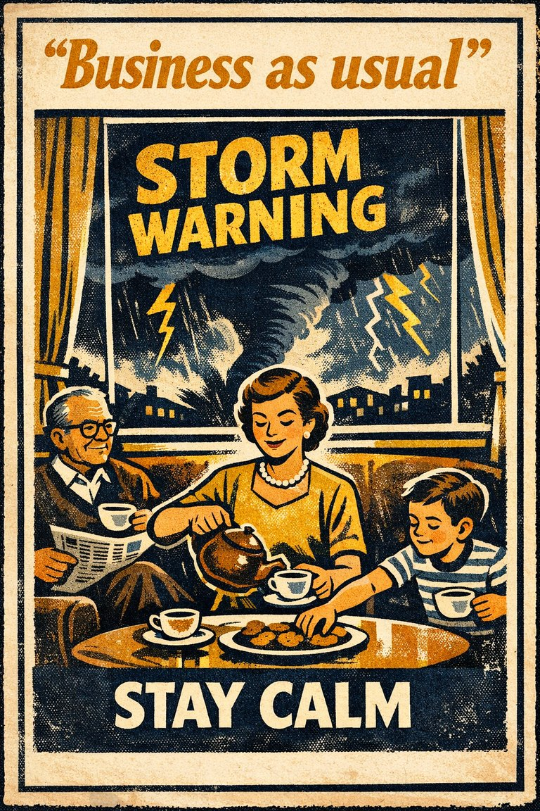
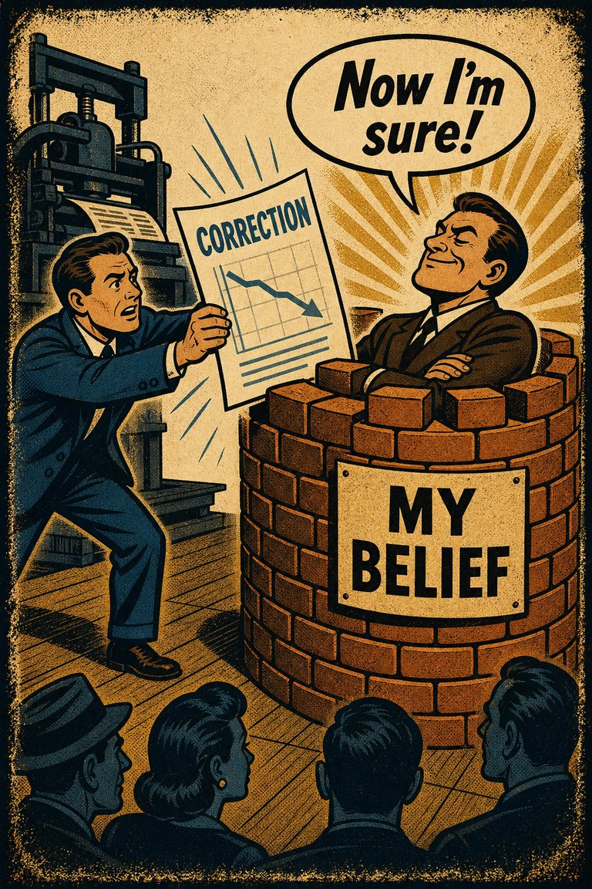

Common in live judgment
73
Common in medicine, policy, parenting, and institutional maintenance.
Rare
Frequent

Cognitive Biases
A practical cognitive-bias site with clear definitions, learning paths, assessments, self-audits, and debiasing tools.
Cognitive Bias
The tendency to judge harmful inaction as more acceptable, or less blameworthy, than equally harmful action.
What it distorts
It bends moral judgment, policy choice, and risk management by making omission look more neutral than it really is.
Typical trigger
Medical choices, safety policy, parenting decisions, leadership calls, and any situation where action would make responsibility feel more explicit.
First countermove
Compare the outcomes of action and omission side by side before deciding that inaction is ethically cleaner.
Coverage depth
Structured process
Why does doing nothing feel morally cleaner here than choosing the equally harmful path by action?
When harm comes through action, agency is vivid; when harm comes through inaction, the causal line feels psychologically softer even when the outcome is equivalent.
These are classroom-facing editorial estimates for comparing how the bias behaves in use. They are teaching aids, not measured statistics.
Common in live judgment
73
Common in medicine, policy, parenting, and institutional maintenance.
Easy to spot from outside
61
Usually visible once both causal paths are placed on one consequence table.
Easy to innocently commit
85
Inaction often feels cleaner because agency feels less vivid.
Teaching difficulty
36
Very teachable with paired action-versus-inaction examples.
This comparison makes the hidden pull easier to see before the technical label has to do all the work.
Biased move
This is like treating the untouched steering wheel as morally neutral while the car keeps drifting toward the ditch on its own momentum.
Clearer comparison
Inaction can preserve harm just as actively as action can create it. Quiet causation is still causation.
Do not use this label whenever restraint is prudent. Sometimes not intervening really is better. The issue is that omission is being granted extra moral innocence simply because it is omission.
Use this label when equally harmful outcomes are judged differently mainly because one came through action and the other through failure to act.
Use the quick check, caveat, and nearby confusions together. The fastest diagnosis is often the noisiest one.
Each example changes the surface context while keeping the same hidden distortion in place.
A parent feels more comfortable not intervening than taking an action with the same risk profile because omission feels less blameworthy.
A leader tolerates ongoing harm from an inherited process because changing it would create visible responsibility if the transition goes poorly.
Policy debates treat harmful inaction as less charged than equally harmful intervention because omission sounds like restraint or neutrality.
Not acting feels like staying clean, even when the decision to abstain is itself shaping the outcome just as much.
Teaching note: This is a strong bias for showing that omission can be an active policy choice rather than a neutral backdrop.
The strongest debiasing moves change the process, not just the label.
Rewrite the case as two causal paths with explicit outcomes, one through action and one through omission.
Ask who is being protected by the comfort of inaction and who bears its hidden cost.
Require decision reviews to document the consequences of choosing the default or doing nothing.
Practice And Repair
Omission bias hides agency inside passivity. When nothing new is done, the resulting harm can feel morally lighter even though the choice to leave things alone is still shaping what happens next.
A choice exists between acting and not acting, with both paths carrying risk or harm.
The action path feels more morally charged because the causal motion is easier to see and to blame.
Inaction receives unearned moral discount simply because its causation is quieter.
Describe the consequences of action and inaction in the same causal language before assigning moral weight.
If I wrote the harms of action and inaction in the same format, would one still feel obviously cleaner?
Spot It
Slow It
Reframe It
These are nearby labels that can share the same outer appearance while differing in what actually drives the distortion. Use the overlap, the distinction, and the diagnostic question together before settling the call.
Why compare it: Status quo bias prefers the existing arrangement; omission bias specifically treats inaction as less blameworthy even when the outcome is equally bad.
Why compare it: Default effect favors the preselected option; omission bias moralizes the difference between doing and not doing.
Why compare it: Loss aversion makes active downside loom large; omission bias makes non-action feel more innocent than action with the same consequence.
These are useful when the label seems roughly right but the process change still feels underspecified.
What outcome does doing nothing actively preserve here?
Am I evaluating the causal result or just the felt cleanliness of inaction?
Would I describe omission as neutral if someone else were choosing it?
These sourced cases do not prove what was in someone's head with perfect certainty. They are teaching cases for showing where the bias pressure becomes visible in practice.
Vaccination and omission-bias scenarios
People often judge harms caused by intervention more harshly than comparable harms caused by abstaining, including in vaccine-related moral scenarios.
Why it fits: The active pathway feels more blameworthy even when the preserved omission path can be just as harmful.
Wikipedia · Modern decision research
Passive disease risk preferred to active side-effect risk
In health decisions, some people judge harms caused by a chosen intervention as morally worse than similar or greater harms caused by refusing the intervention.
Why it fits: The action pathway feels uniquely blameworthy even when it is not uniquely harmful.
Wikipedia · Modern decision research
Vaccination decisions and harmful inaction
Ritov and Baron studied reluctance to vaccinate when harm caused by action felt more blameworthy than comparable harm allowed by inaction.
Why it fits: Inaction is treated as psychologically cleaner even when its consequences belong in the same comparison.
Journal of Behavioral Decision Making · 1990
Use these sources to move from the teaching page into the underlying literature and seed reference material. The site is still written for clarity first, but the stronger pages should also be traceable.
A classic applied source for treating harmful inaction as psychologically cleaner than harmful action.
Seed taxonomy and broad coverage are drawn from Wikipedia's List of cognitive biases, then editorially reshaped into a teaching-first reference.
Once you know the bias, these nearby tools help you use the page in a real workflow rather than as a static definition.
Curated sequences where this bias commonly appears alongside a few predictable neighbors.
Short audits you can run before the distortion hardens into a decision, a verdict, or a post-hoc story.
Bias-aware AI prompts that widen the frame instead of simply endorsing the first preferred conclusion.
A mixed scenario set that can quietly pull this bias into the question bank without announcing the answer in the title first.
These links widen the frame around the bias without interrupting the core lesson on this page.
An article on why defaults, omissions, and inherited arrangements often steer judgment and outcome as strongly as explicit choices do.
CogBias theory
These neighbors were selected from shared categories, shared patterns, and explicit editorial links where available.

The tendency for potential losses to weigh more heavily than equivalent gains when choices are being evaluated.

The tendency to favor the preselected or default option simply because it is already positioned as the path of least resistance.

The tendency to prefer the current option, default, or inherited arrangement simply because it is the current option, default, or inherited arrangement.

The tendency to avoid options when their probabilities are unclear, even if the unclear option may not actually be worse than the familiar one.

The tendency to assume that things will keep functioning more or less normally, which leads people to underprepare for unprecedented or fast-moving disruption.

A tendency to react to disconfirming evidence by strengthening one's previous beliefs